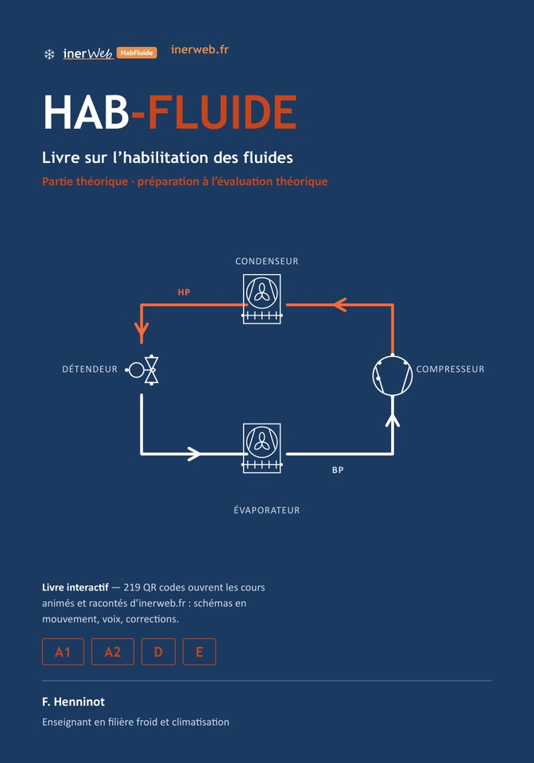
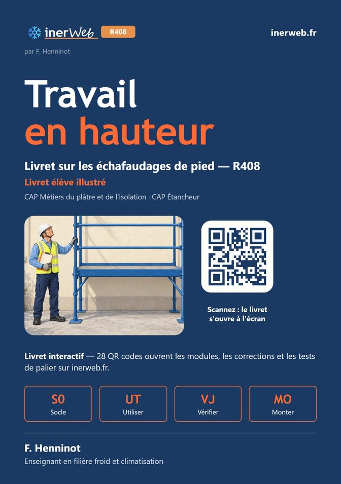
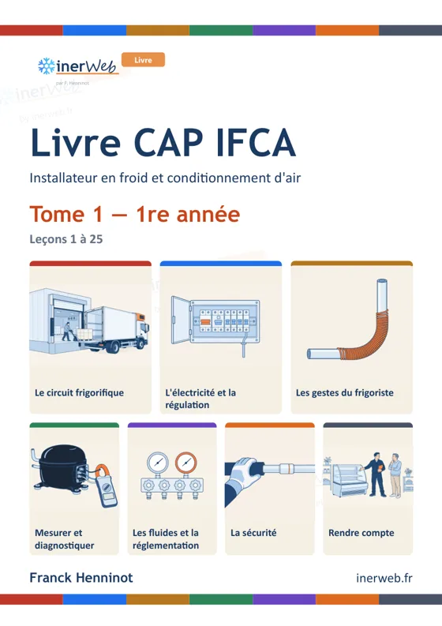
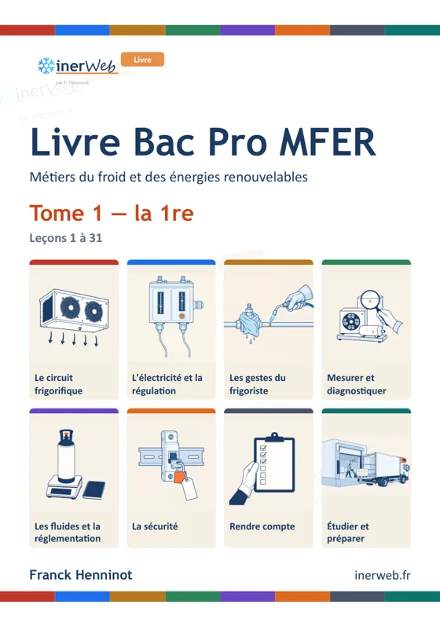
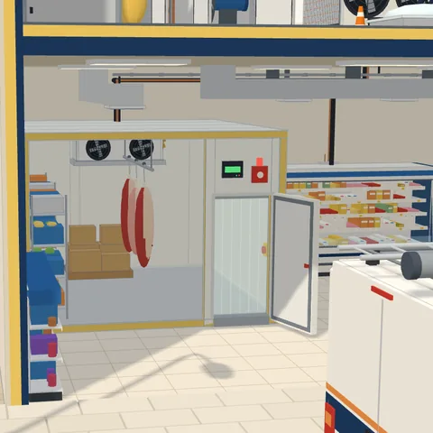
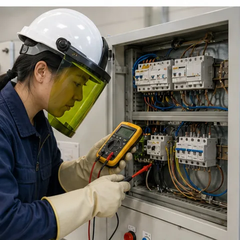
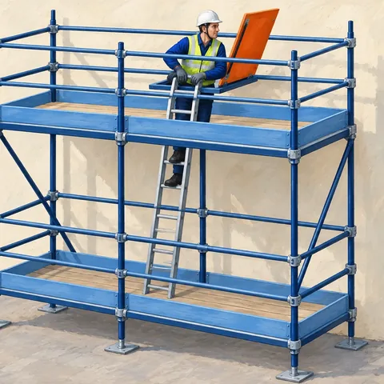
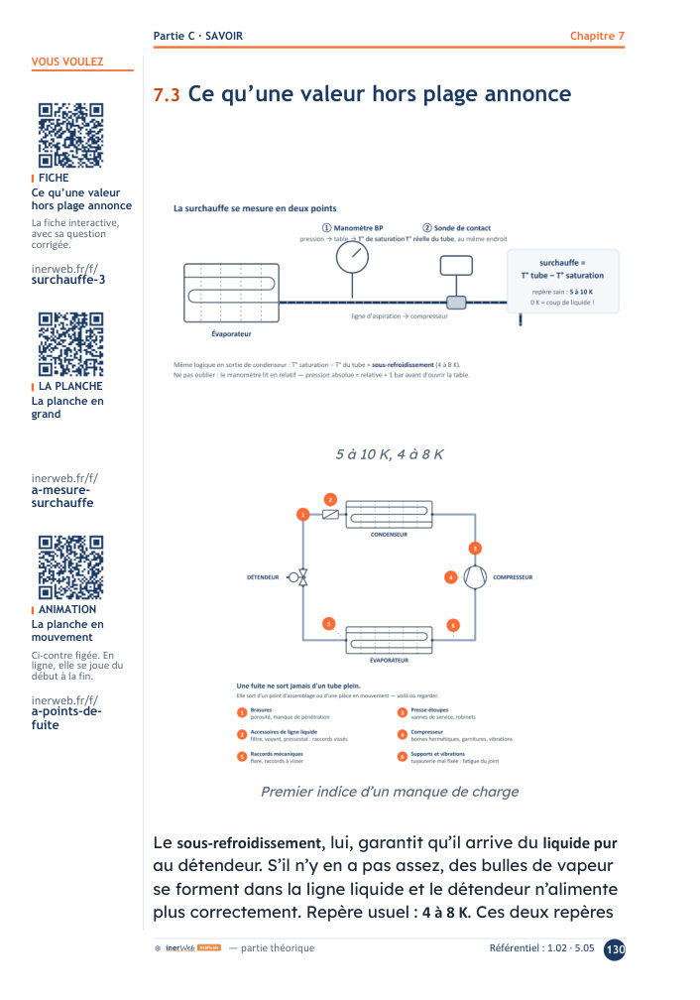
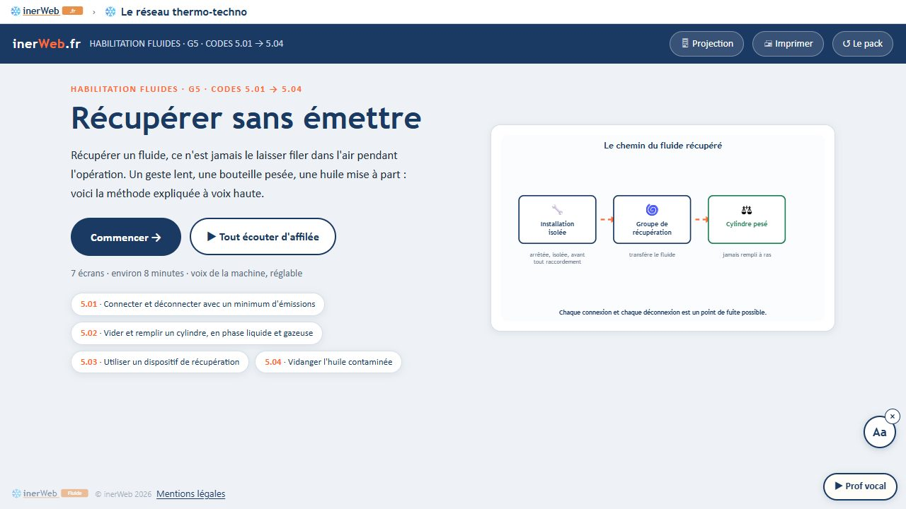

Trois habilitations réglementaires, une seule méthode, un dispositif complet.

Fluides frigorigènesHabilitation électrique

Travail en hauteur

Livre CAP IFCA

Livre Bac Pro MFER
Des livres augmentés, une plateforme d'apprentissage animée et sonorisée, un logiciel de centre
d'examen. Tout ce qui est présenté ici existe et fonctionne : chaque écran mène à la vraie ressource.
Conçu et développé parinerWeb — F. Henninot,
enseignant en froid et climatisation
Trois attestations sans lesquelles on ne travaille pas
Des apprentis et des élèves qui en ont besoin à la sortie de leur formation, des salariés que les
textes obligent à y revenir.
Habilitation
Ce que dit le texte
Qui en a besoin
Fluides frigorigènes catégories A1 · A2 · D · E
Nouveau régime au 1er janvier 2027. Tous les anciens titulaires doivent se remettre
à niveau avant le 12 mars 2029. L'attestation est désormais valable 7 ans.
Arrêtés du 21 novembre 2025 · règlement (UE) 2024/573
Frigoristes et climaticiens, CAP, Bac Pro, titres professionnels, reconversions
Électrique B0 → B1V · BR
L'employeur délivre l'habilitation après une formation conforme à la NF C 18-510,
à renouveler périodiquement.
Tout intervenant sur une installation ou à son voisinage
Travail en hauteur échafaudages, R408
Attestation de compétences selon la recommandation R408, puis autorisation de l'employeur.
Exigée à l'inscription au CAP Étancheur.
Toute personne qui monte, vérifie ou utilise un échafaudage de pied
Une demande récurrente : chaque promotion, chaque salarié, chaque renouvellement.
Un même public, un même plateau, un même enseignement de la sécurité : un seul dispositif suffit.
Une seule méthode pour les trois
Le stagiaire suit toujours le même chemin. Seul le référentiel change.
1
Apprendre
Des écrans animés, une voix qui explique, des modèles en 3D. Sur l'ordinateur ou le téléphone.
inerweb.fr
2
Lire et répondre
Le livre pose la question. Un code QR ouvre l'animation qui explique, à la bonne page.
le livre augmenté
3
S'entraîner
Des questions mesurées, une correction qui renvoie à la leçon, un bilan par compétence.
séries et examens blancs
4
Être évalué
Épreuve théorique sur tablette, grille pratique sur la tablette de l'évaluateur.
le logiciel du centre
5
Attester, prouver
Attestation, registre scellé, procédures : ce qu'un auditeur vient vérifier.
le logiciel du centre

Fluides frigorigènes

Habilitation électrique

Travail en hauteur
Un exemple : le tirage au vide
Le livre l'explique, une animation le montre, des questions l'entraînent, et la grille de
l'évaluateur le note (codes 3.03 et 3.04 de l'arrêté). Ce qu'on apprend, ce qu'on lit et ce sur quoi on
est évalué sont la même chose. Une habilitation nouvelle, c'est un référentiel ajouté, pas un logiciel réécrit.
Ce n'est pas un projet : le dispositif tourne
Chiffres relevés en octobre 2026.
Fluides frigorigènes
HabFluide
Manuel de 444 pages, 219 codes QR
269 questions, 44 fiches de cours
24 capsules narrées, 80 cours interactifs
Référentiel A1 couvert : 94 / 94
Habilitation électrique
HoCourant
Livret de 124 pages, 29 codes QR
13 stations de cours
29 films interactifs
Niveaux B0 → B1V · BR
Travail en hauteur
R408
Livret de 122 pages
11 modules + 3 pour les adultes
253 questions
88 / 88 points du document INRS
Logiciel du centre d'examen
Évaluer et attester
inerWeb Habilitation
40 versions successives
533 contrôles automatiques
Poste maître, tablettes, évaluateur
Mode démonstration intégré
Et la même méthode en formation initiale : livre CAP IFCA en deux tomes (208 + 224 pages,
exemplaire professeur de 114 pages), livre Bac Pro MFER (1re : 256 pages, professeur 72 pages).
Le tout adossé à inerweb.fr : 13 réseaux de formation, près de 7 000 narrations.
Le papier pose la question, l'écran explique
Le stagiaire scanne le code QR de la page. L'animation s'ouvre sur l'écran exact, une voix
explique, il revient au papier pour répondre.
Une voix qui explique : pour celui qui lit difficilement, et pour celui qui ne parle pas encore
bien français. Vitesse réglable, jamais déclenchée d'office.
Le texte reste affiché pendant que la voix parle, et la police s'adapte aux lecteurs
dyslexiques (bouton « Aa »).
Hors ligne si besoin : tout peut tourner sur le poste du centre, sans abonnement.
Le formateur projette la même animation en salle : aucune photocopie supplémentaire.

La page du manuel : trois codes QR en marge (fiche, planche, animation)

Ce qu'ouvre le code : la capsule narrée, codes du référentiel en tête
Inscrire, faire passer, corriger, attester, archiver : un seul outil, installé sur le poste du
centre. Captures d'un centre de démonstration, données entièrement fictives.
En mode démonstration, les connexions sont pré-remplies.
Comment c'est fabriqué
Une méthode d'atelier : une source, des contrôles, une relecture humaine.
Le référentiel officiel est une donnée : chaque contenu porte ses codes, et la couverture se
mesure à chaque fabrication. Elle ne se déclare pas.
Une seule source donne le livre, le site, la projection et les questions : corriger une fois
corrige partout.
Des questions contrôlées : un programme vérifie qu'on ne trouve pas la réponse sans lire.
Les voix sont fabriquées sur le poste, sans service en ligne. Si un texte change, l'ancienne
voix cède la place : jamais une explication fausse.
Des outils d'intelligence artificielle pour écrire, coder, dessiner et enregistrer, sous la
direction d'un enseignant du métier : chaque contenu est vérifié et mesuré, la relecture métier reste humaine.
Hors ligne et sans abonnement : le centre ne dépend d'aucun fournisseur.
94 / 94
exigences A1 couvertes et tenues
88 / 88
points R408 enseignés et évalués
533
contrôles automatiques du logiciel
En cours
relecture métier par des professionnels
Pourquoi maintenant : la fenêtre des fluides
31/12/2026
l'ancien dispositif de 2008 est abrogé
12/03/2029
date limite de mise à niveau de tous les anciens titulaires
7 ans
nouvelle validité : chaque titulaire revient
Ce qu'un centre peut proposer
Durée
Ce qu'il faut obtenir
Formation et examen complets A1
5 jours, épreuve de 4 h 15
Agrément d'organisme évaluateur
Mise à niveau des anciens titulaires
3 h 30
Certification d'organisme formateur
Extension CO₂ (catégorie B)
épreuve de 3 h 45
Extension de périmètre, plateau haute pression
Maintien de compétence
5 h, tous les 7 ans
Qualiopi
Électrique et travail en hauteur
de 1 à 3 jours
Formateurs compétents, Qualiopi : pas d'agrément d'État
Sources : arrêtés du 21 novembre 2025 ; NF C 18-510 ; recommandation R408 et document INRS.
Pour un centre de formation, un lycée, un organisme évaluateur
Le dispositif se met à disposition en tout ou partie, selon ce que vous avez déjà.
Le logiciel du centre
Installé sur votre poste, vos données restent chez vous. Mode démonstration pour former vos équipes.
Les livres augmentés
HabFluide, HoCourant, R408, et les livres de cours CAP et Bac Pro, avec leurs exemplaires formateur.
La plateforme
Les cours animés et sonorisés d'inerweb.fr, l'entraînement, la projection en salle.
L'accompagnement
Procédures, dossier d'épreuve, mise en route du plateau : ce qui a déjà été écrit pour un centre.
Pour en parler
Une démonstration complète dure quinze minutes, en présentiel ou en visio, sur un vrai poste :
inerweb.fh@gmail.com
Conçu et développé parinerWeb — F. Henninot,
enseignant en froid et climatisation
Annexe
« Couvrez-vous tout le programme ? »
Oui, et c'est mesuré exigence par exigence. Source : arrêté du 21 novembre 2025, annexe II.B (136 codes).
Catégorie fluides
Exigences
Couvertes
Couverture
A1
94
94
100 %
A2
93
93
100 %
D
21
21
100 %
E
17
17
100 %
Chaque exigence est reliée à la fiche qui l'enseigne et aux questions qui la vérifient.
R408 : les 88 points du document INRS sont chacun enseignés et évalués, vérifiés par programme.